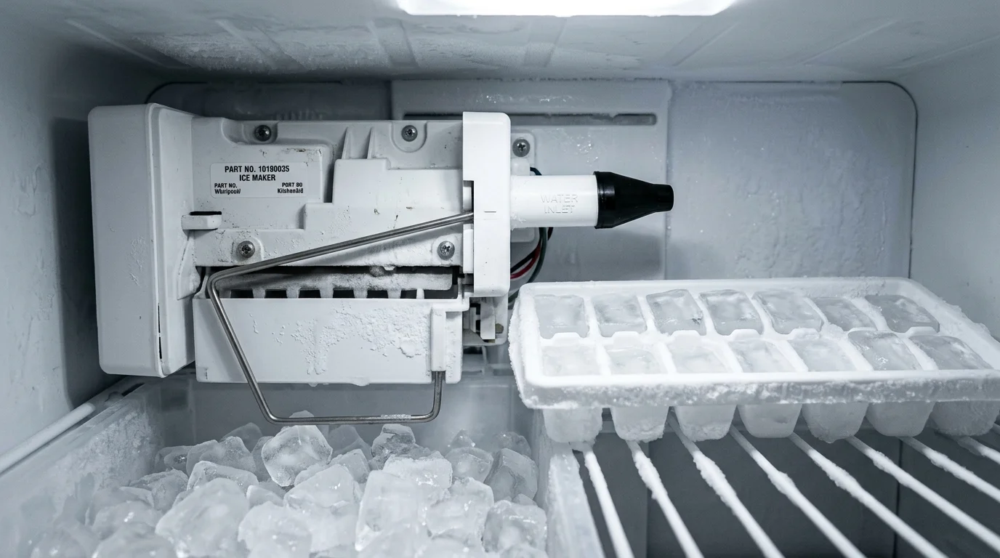

Why Did My Ice Maker Stop Making Ice? Causes & Quick Fixes

Few appliance issues are more irritating on a hot Colorado afternoon than grabbing a glass, pressing the ice dispenser, and hearing only an empty clicking noise. If you find yourself asking, why did my ice maker stop making ice, or discovering that your fridge not making ice has left your drinks lukewarm, you are certainly not alone. When trying to understand why do ice makers stop working, homeowners often feel overwhelmed by all the interconnected mechanical, electrical, and plumbing components inside a modern refrigerator.
If you are frustrated and asking why isn't my ice maker working or wondering why is my ice maker not working despite normal cold water flow at the dispenser door, the issue usually stems from a delicate combination of water supply pressure, sub-freezing temperatures, faulty electrical solenoid valves, or motorized harvest gears. From frozen supply lines to stuck shut-off arms, investigating why would ice maker stop working usually points to five common failure points that you can systematically troubleshoot.
Quick Diagnostic Matrix: Ice Maker Troubleshooting
| Symptom | Most Likely Cause | Recommended Solution |
|---|---|---|
| Water dispenser works, but fridge not making ice | Frozen water fill spout or burned-out secondary ice solenoid | Thaw fill tube with hair dryer; test valve coil with multimeter |
| Fridge not making ice & freezer is above 10°F | Frost on evaporator coils, dirty condenser, or fan motor failure | Clean condenser coils; check defrost thermostat; adjust temp to 0°F |
| Ice maker clicks/hums but no ice drops | Jammed ice cubes in ejector rake or stripped motor gearbox | Clear stuck cubes with plastic spatula; check feeler shut-off arm |
| Hollow, small, or deformed ice cubes | Restricted water filter or low household supply water pressure | Replace OEM filter; ensure water shut-off saddle valve is fully open |
1. Check the Mechanical Shut-Off Arm or Optical Feeler Beam
A very common reason homeowners wonder why does my ice maker not work is a triggered shut-off sensor. Most residential ice makers feature a metal feeler wire (bail arm) or an infrared optical beam that continuously monitors ice bin fullness. When this safety sensor is engaged, the entire cycle halts:
- If the metal feeler arm is pushed into the UP position (often bumped by an overgrown mound of ice or an overstuffed frozen food box), the machine assumes the bin is full, which directly explains why won't my ice maker work.
- Gently lower the arm down into the ACTIVE (DOWN) position to reactivate cycling and resume ice production.
- On modern French-door and side-by-side refrigerators, inspect the digital door control panel to ensure "Ice Maker Off" or "Child Lock" has not been accidentally enabled, which is a frequent reason why ice maker is not working after household cleanings.
2. Inspect the Freezer Temperature (Must Be Below 10°F)
This is one of the most frequently overlooked reasons for a fridge not making ice: Ice makers will strictly refuse to cycle if the freezer temperature rises above 10°F (-12°C). When troubleshooting why is my icemaker not working, always verify internal temperatures with an accurate refrigerator thermometer rather than relying solely on the digital display.
The ice maker mold contains an internal bimetal thermostat that waits until the water freezes solid (typically below 5°F to 0°F) before energizing the mold heater and sweeping the ejector fingers. Many homeowners asking why is my ice machine not working discover that while their ice cream feels relatively cold at 12°F to 15°F, the ice maker thermostat will never trigger the harvest cycle—leaving the tray idle and leaving you wondering why production has completely halted.
3. Frozen Water Line or Fill Tube
Look behind the ice maker module where the small rubber or plastic spout feeds water into the tray mold. If incoming water pressure drops slightly or temperatures fluctuate, residual water droplets pool and freeze inside the spout, forming an impenetrable ice plug. If your unit clicks or cycles but you are left asking why isn't my ice maker making ice, a blocked fill tube is often the culprit. Low water pressure causes freeze-ups inside the spout, explaining why ice maker not making ice continues to be a recurring headache for Littleton homeowners.
4. Clogged In-Door Water Filter or Closed Supply Valve
Modern dual-solenoid water valves require at least 20 PSI of continuous incoming water pressure to snap open. If your refrigerator water filter has not been replaced within the past 6 months, sediment buildup chokes the flow:
- Replace your water filter cartridge with a genuine manufacturer OEM filter.
- Inspect the cold water shut-off valve behind the refrigerator or under the kitchen sink to verify it is fully counter-clockwise (100% open).
- Inspect the flexible plastic or braided stainless-steel supply line for kinks behind the cabinet.
Frigidaire & Popular Brand Specific Ice Maker Troubleshooting
Homeowners frequently ask us why isn't my frigidaire making ice even when the refrigerator runs quietly. On Frigidaire, Whirlpool, and GE models, specific design traits can cause unexpected stoppages:
- Frigidaire Gallery & Professional Series: A primary root cause for why my frigidaire refrigerator not making ice is an unseated PureSource water filter or a frozen fill tube elbow inside the rear freezer wall. If water pressure drops below 20 PSI, the inlet valve fails to seat cleanly, locking out the cycle.
- Optical Sensor Alignment: If you are diagnosing why is ice maker not working on units with LED optic boards, ensure nothing is blocking the beam between the left and right walls of the freezer bin.
5. Defective Dual Water Inlet Solenoid Valve
When the ice maker cycle calls for water, an electrical impulse energizes the solenoid coil on the water inlet valve at the back of the refrigerator. If this dedicated coil burns out or mineral deposits seize the internal valve needle, no water will enter the tray, leaving your fridge not making ice. A certified appliance technician can measure coil resistance with an electrical multimeter to verify whether a replacement valve is needed.
Frequently Asked Questions About A Fridge Not Making Ice
Why did my ice maker stop working all of a sudden?
If your ice maker suddenly stopped producing ice out of nowhere, the five most frequent culprits are: (1) an accidentally raised feeler wire arm shut off, (2) a frozen water fill tube nozzle, (3) incoming water pressure dropping below 20 PSI due to an overdue filter, (4) freezer temperatures climbing above 10°F (-12°C), or (5) a burned-out water inlet solenoid valve coil.
Why won't my ice maker make ice even though the freezer is freezing?
If the freezer compartment is freezing food normally but you wonder why won't my ice maker make ice, the mold heater or gear harvest motor may have stalled. When plastic ejector gears strip or the mold thermostat loses continuity, the tray fills once and never dumps the cubes.
Why is my icemaker not making ice after changing the water filter?
When homeowners ask why is my icemaker not making ice right after installing a new filter, the issue is almost always trapped air pockets in the water line. Dispense water continuously for 3 minutes through the door to purge air from the reservoir and restore steady water pressure to the ice maker valve.
Why is my fridge not making ice but the water dispenser works?
Refrigerators with ice and water dispensers feature a dual solenoid water inlet valve. The dispenser operates on one valve coil, while the ice maker operates on a separate coil. If the water dispenser functions properly but your fridge is not making ice, the culprit is almost always a frozen fill tube spout or a failed secondary solenoid coil.
How do I reset my ice maker when it stopped making ice?
On most Whirlpool, GE, and Frigidaire models, locate the small on/off toggle or pinhole test button beneath the ice maker module. Press and hold the test switch for 3 to 5 seconds. The unit will beep, rotate its ejector arm, and open the water valve. If you are searching online wondering why isnt my ice maker working after trying DIY resets, the motorized assembly or dual solenoid valve likely requires certified replacement.
Still Having Ice Maker Problems?
If you have verified water lines and filter pressure but your ice maker will not make ice, let our certified Littleton repair technicians help. We carry OEM ice maker modules, dual solenoid valves, and electronic boards on our trucks for same-day resolution. Learn more about our dedicated ice maker repair services or book immediate service below.
Call (720) 473-5289 for Same-Day Repair